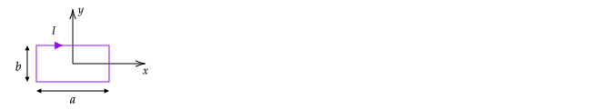

Send your solutions to the email address rweigel+phys305@gmu.edu as a scanned PDF. Use a file name of Yourlastname_PHYS305_HW10.pdf (one file only, please). Capitalize the first letter in your last name and use caps and underscores as indicated. Include your name on the first sheet.
A current loop with a radius of b is parallel to the x−y plane and centered on z=d. The current in the loop is I.
There is an external magnetic field of
Bext​=4πμo​​r3mo​​(2cosθr^+sinθθ^)
(This field is due to a magnetic dipole at the origin.)
What is Bext​ at (x,y,z)=(b,0,d)?
Explain why the net force on the loop will be in the z direction. (Note: earlier had −z typo.)
If the loop is flexible, will it tend to compress or expand?
Compute the net force (magnitude and direction) on the loop. Your answer should be in terms of μo​, I, mo​, b, and d. It may help to draw the loop as viewed from a point above with vectors indicating the direction of Bext​ and the associated force.
Note that the loop shown will create a magnetic field. However, when computing the force on the loop, the field due to the loop is omitted, and only Bext​ is used. The reason is the same reason that when you compute the force on an object in mechanics, you only use the force due to the gravitational field of Earth. Although each part of the object exerts a gravitational force on the other parts of the object, the net “self–force” is zero.
Answer
1. At this point (and actually any point on the wire), cosθ=d/r and sinθ=b/r, where r=b2+d2​
Bext​=4πμo​​(b2+d2)5/2mo​​(2dr^+bθ^)
2. From the diagram, at any point on the wire, the field has components in +z and +s directions (for small enough θ). The cross product of s^ with I gives a +z^ force.
3. The cross product Bz​ with I gives a force in the −s^ direction. This force tends to compress the wire.
4. The easiest way to solve this is to write Bext​ with cylindrical unit vectors (given that I was written with a cylindrical unit vector, and we need to compute I×Bext​).
The given field is
Bext​=Bo​(2cosθr^+sinθθ^), where Bo​≡μo​mo​/4πr3 and r, sinθ, and cosθ are given in the answer to part 1.
To write Bext​ in cylindrical coordinates, use a diagram to show that
r^=cosθz^+sinθs^
θ^=−sinθz^+cosθs^
Substitution gives
Bo​Bext​​=(3cos2θ−1)z^+3cosθsinθs^
(Earlier, I noted that for small enough θ, Bext​ has a +z component. From this equation, we can see that the requirement for this is 3cos2θ−1>1.)
Both components are constant on the loop because θ is constant. Based on the answers to 2. and 3., we only expect the s^ component of the field to give a net force. Given these two arguments, we can finish the problem by writing F=ILBexts​z^ with L=2πb and Bexts​=3cosθsinθ. In the following, details on the math that leads to these conclusions are shown.
We need to evaluate
F=∫dlI×B
From the diagram, I=−Iϕ^​ and dl=bdϕ.
The cross product needed for computing the force is
We usually would convert s^ to cartesian unit vectors before integration. However, we know that the integral of dϕs^ from 0 to 2π is zero from a diagram (see discussion in integrating unit vectors; we also expect this physically – if we pick two points on opposite sides of the wire, the force on them in the s^ direction is equal and opposite. As a result, we could drop the s^ term in the cross product at this point.
Using dl=bdϕ and the cross product computed above, we have
Find B at the origin due to the rectangular current loop shown in the following figure. (The loop is centered on the origin.)
If a is increased while b is fixed, such that a≫b, we expect the field at the origin to be approximately the field due to infinitely long wires at y=b/2 and y=−b/2. Compute B at the origin using this assumption. You may do this by taking your answer from 1. and applying the limit a≫b or by simply using the formula for the field due to a long straight wire in introductory textbooks.

Answer
1. Griffiths gives the equation B=4πsμo​I​(sinθ2​−sinθ1​). This equation can be applied to the given problem. For the bottom wire, the initial angle is sinθ1​=a/a2+b2​ and the final angle is sinθ2​=−a/a2+b2​. Therefore,
The top wire contributes the same field as the bottom, so.
Top: Bz​=−πbμo​I​a2+b2​a​
The field for the left and right wire can be found by swapping a and b in the above equation.
Left: Bz​=−πaμo​I​a2+b2​b​
Right: Bz​=−πaμo​I​a2+b2​b​
Griffiths’ solution uses a short–cut that applies to this particular problem. In class, I encouraged you to solve this problem using the more general method, which is as follows.
Within these limits of integration, cosu is positive*, so we can drop the absolute value and integrate. (*this requires some thought and a diagram to show.)
B=−z^4πμo​​bI2​(sinuf​−sinuo​)
If uo​=tan−1(−a/b), then tanuo​=−a/b. This corresponds to a right triangle in the fourth quadrant with sides of a and b, which has a hypotenuse of a2+b2​ and for which sinuo​=−a/a2+b2​. Similarly, sinuf​=a/a2+b2​. Substitution gives
B=−z^bμo​I​a2+b2​a​
2. For an infinite wire, B=μo​I/2πs, where s is the perpendicular distance from the wire; the magnitude is determined from the right–hand rule. The top and bottom wires will create a field with this magnitude in the −z^ direction (from the right-hand rule). For both wires, the perpendicular distance is b/2. Therefore, Bz​=−2μo​I/πb.
The field from the top and bottom wires from part 1. is
A segment of a closed current loop is shown in the following figure. Compute the magnetic field at the center of the semi–circle due to the straight and curved segments shown.
(Technically, to use the Biot–Savart law for currents in a wire, the current must be constant, and the wire must form a closed loop. As a result, there will be a contribution to the magnetic field at the origin due to the parts of the closed loop that are not shown. However, here we assume that the not–shown part of the loop is far enough away that they can be neglected.)
Answer
For the magnitude, one can use 1/2 of equation 5.41 of Griffiths with z=0. The direction can be determined from the right-hand rule. (Equation 5.41 is for a circular loop offset in the z direction.)
If the origin is the center of the circle, x is up, and y is to the right, then I=Iϕ^​, dl′=Rdϕ′, r=0, and r′=Rs^. Substitution of these into
Find B(z) for the previous problem, where the z–axis passes through the center of the semi–circle and is perpendicular to the page. Assume positive z is out of the page.
Comments
The contributions from the straight segments can be found using
B=4πsμo​I​(sinθ2​−sinθ1​)
and a diagram to determine θ1​ and θ2​.
The contribution from the semi–circle can be found using 1/2 of equation 5.41 of Griffiths.